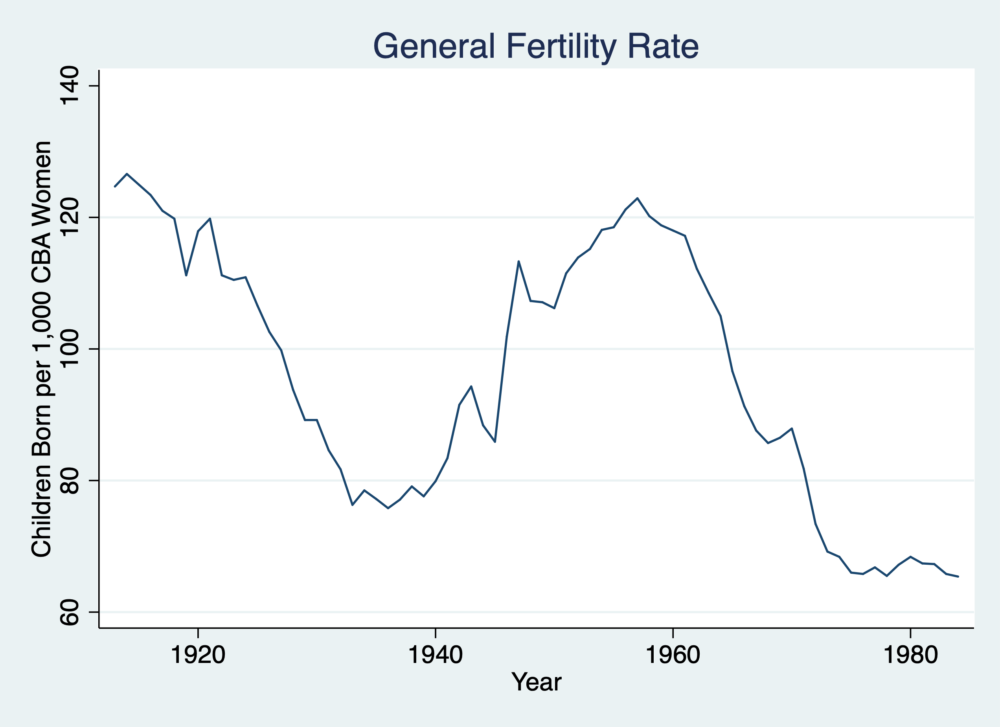
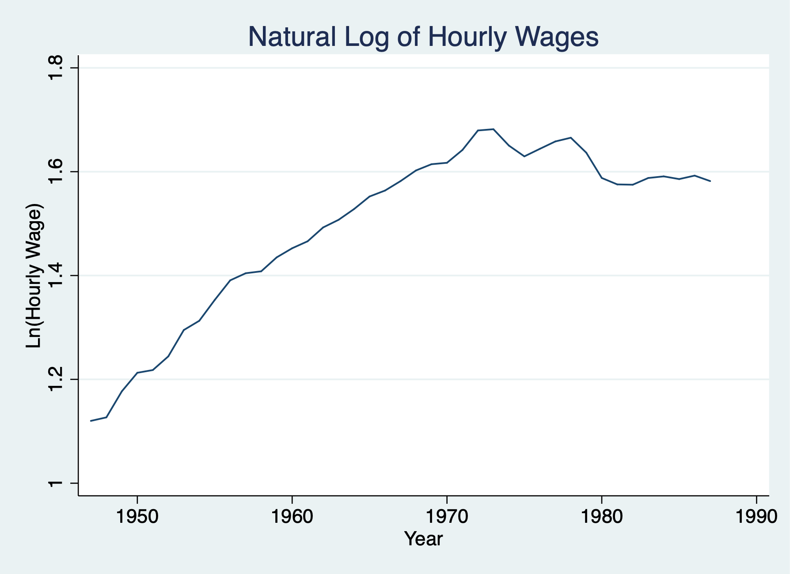
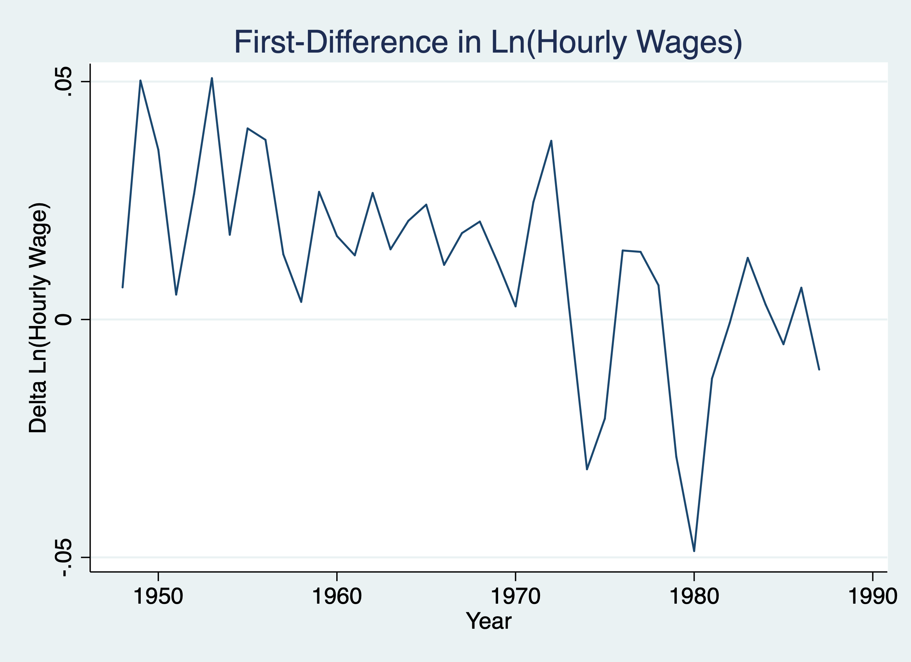

Chapter 1 Unit Roots
Lesson: when we have a unit root process or Time Series integrated of order one \(I(1)\) we can use a first difference to transform the time series into a weakly dependent and often stationary process.
1.1 Example: Revisit Fertility
Set the time series
/Users/Sam/Desktop/Econ 645/Data/Wooldridge
time variable: year, 1913 to 1984
delta: 1 unitPlot the Graph
twoway line gfr year, title("General Fertility Rate") ytitle("Children Born per 1,000 CBA Women") xtitle("Year")
graph export "/Users/Sam/Desktop/Econ 645/Stata/week_11_i1.png", replace
Estimate autocorrelation or estimate \(\hat{\rho}\)
Source | SS df MS Number of obs = 71
-------------+---------------------------------- F(1, 69) = 1413.53
Model | 25734.824 1 25734.824 Prob > F = 0.0000
Residual | 1256.21904 69 18.2060731 R-squared = 0.9535
-------------+---------------------------------- Adj R-squared = 0.9528
Total | 26991.043 70 385.586329 Root MSE = 4.2669
------------------------------------------------------------------------------
gfr | Coef. Std. Err. t P>|t| [95% Conf. Interval]
-------------+----------------------------------------------------------------
gfr |
L1. | .9777202 .0260053 37.60 0.000 .925841 1.029599
|
_cons | 1.304937 2.548821 0.51 0.610 -3.779822 6.389695
------------------------------------------------------------------------------Our result is rho-hat is 0.98, which is indicative of a unit root process. Under our TS assumptions our t statistics are invalid, but if we use a transformation using a first-difference process, we can relax those assumptions under the TSC assumptions. If our \(I(1)\) becomes \(I(0)\), then our TSC assumptions are potentially valid.
First Difference both dependent and independent
Source | SS df MS Number of obs = 71
-------------+---------------------------------- F(1, 69) = 2.26
Model | 40.3237206 1 40.3237206 Prob > F = 0.1370
Residual | 1229.25866 69 17.8153428 R-squared = 0.0318
-------------+---------------------------------- Adj R-squared = 0.0177
Total | 1269.58238 70 18.1368911 Root MSE = 4.2208
------------------------------------------------------------------------------
D.gfr | Coef. Std. Err. t P>|t| [95% Conf. Interval]
-------------+----------------------------------------------------------------
pe |
D1. | -.0426776 .0283672 -1.50 0.137 -.0992686 .0139134
|
_cons | -.7847796 .5020398 -1.56 0.123 -1.786322 .2167625
------------------------------------------------------------------------------Our result is that the real value of the personal exemption is associated with a 0.043 decrease in fertility or a 23 dollar increase in the real value of the personal exemption is associated with a 1 child per capita (1,000 CBA Women). This is a bit unexpected, but still insignificant. Let’s add some lags.
First differnce with more than 1 lag
Source | SS df MS Number of obs = 69
-------------+---------------------------------- F(3, 65) = 6.56
Model | 293.259859 3 97.7532864 Prob > F = 0.0006
Residual | 968.199959 65 14.895384 R-squared = 0.2325
-------------+---------------------------------- Adj R-squared = 0.1971
Total | 1261.45982 68 18.5508797 Root MSE = 3.8595
------------------------------------------------------------------------------
D.gfr | Coef. Std. Err. t P>|t| [95% Conf. Interval]
-------------+----------------------------------------------------------------
pe |
D1. | -.0362021 .0267737 -1.35 0.181 -.089673 .0172687
|
pe_1 |
D1. | -.0139706 .0275539 -0.51 0.614 -.0689997 .0410584
|
pe_2 |
D1. | .1099896 .0268797 4.09 0.000 .0563071 .1636721
|
_cons | -.9636787 .4677599 -2.06 0.043 -1.89786 -.0294976
------------------------------------------------------------------------------Our results show that increases in the current and prior period real value personal exemption is not statistically significant. However, a 1 dollar increase in the real value of personal exemption is associated two period prior is associated with an increase of .110 child per capita (or $9.1 increase is associated with an increase of 1 child per capita.
1.2 Wages and Productivity
\(I(1)\) process with the presence of a linear trend
We want to estimate the elasticity of hourly wage with respect to output per hour (or labor productivity).
\[ ln(hrwage_t)=\beta_0 + \beta_1 ln(outphr_t) + \beta_2 t + u_t \]
Set Time Series and estimate the contemporaneous model
cd "/Users/Sam/Desktop/Econ 645/Data/Wooldridge"
use earns.dta, clear
tsset year, yearly
reg lhrwage loutphr t/Users/Sam/Desktop/Econ 645/Data/Wooldridge
time variable: year, 1947 to 1987
delta: 1 year
Source | SS df MS Number of obs = 41
-------------+---------------------------------- F(2, 38) = 641.22
Model | 1.04458064 2 .522290318 Prob > F = 0.0000
Residual | .030951776 38 .00081452 R-squared = 0.9712
-------------+---------------------------------- Adj R-squared = 0.9697
Total | 1.07553241 40 .02688831 Root MSE = .02854
------------------------------------------------------------------------------
lhrwage | Coef. Std. Err. t P>|t| [95% Conf. Interval]
-------------+----------------------------------------------------------------
loutphr | 1.639639 .0933471 17.56 0.000 1.450668 1.828611
t | -.01823 .0017482 -10.43 0.000 -.021769 -.0146909
_cons | -5.328454 .3744492 -14.23 0.000 -6.086487 -4.570421
------------------------------------------------------------------------------We estimate that the elasticity is very large, where a 1% increase in labor productivity (output per hour) is associated with a 1.64% increase in hourly wage. Let’s test for autocorrelation with accounting for the linear trend.
Source | SS df MS Number of obs = 40
-------------+---------------------------------- F(2, 37) = 1595.37
Model | .921760671 2 .460880336 Prob > F = 0.0000
Residual | .010688817 37 .000288887 R-squared = 0.9885
-------------+---------------------------------- Adj R-squared = 0.9879
Total | .932449488 39 .023908961 Root MSE = .017
------------------------------------------------------------------------------
lhrwage | Coef. Std. Err. t P>|t| [95% Conf. Interval]
-------------+----------------------------------------------------------------
lhrwage |
L1. | .9842872 .0334331 29.44 0.000 .9165452 1.052029
|
t | -.0009039 .0004732 -1.91 0.064 -.0018626 .0000548
_cons | .0544169 .0413998 1.31 0.197 -.0294671 .1383008
------------------------------------------------------------------------------We have some evidence for a unit root process, so we’ll use the first-difference to transform the I(1) process into a I(0) process. We’ll no longer need the time trend
twoway line lhrwage year, title("Natural Log of Hourly Wages") ytitle("Ln(Hourly Wage)") xtitle("Year")
graph export "/Users/Sam/Desktop/Econ 645/Stata/week_11_hrwage1.png", replace
twoway line d.lhrwage year, title("First-Difference in Ln(Hourly Wages)") ytitle("Delta Ln(Hourly Wage)") xtitle("Year")
graph export "/Users/Sam/Desktop/Econ 645/Stata/week_11_hrwage2.png", replace
We’ll keep the trend based upon our prior graph
Source | SS df MS Number of obs = 40
-------------+---------------------------------- F(2, 37) = 19.12
Model | .008727211 2 .004363605 Prob > F = 0.0000
Residual | .008445792 37 .000228265 R-squared = 0.5082
-------------+---------------------------------- Adj R-squared = 0.4816
Total | .017173003 39 .000440333 Root MSE = .01511
------------------------------------------------------------------------------
D.lhrwage | Coef. Std. Err. t P>|t| [95% Conf. Interval]
-------------+----------------------------------------------------------------
loutphr |
D1. | .5511404 .1733698 3.18 0.003 .1998598 .9024209
|
t | -.0007637 .0002321 -3.29 0.002 -.0012339 -.0002935
_cons | .0176094 .0074784 2.35 0.024 .0024567 .0327622
------------------------------------------------------------------------------Our transformed model shows that a 1% increase in output per hour is associated with a .55% increase in hourly wage.